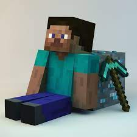
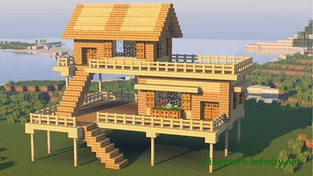
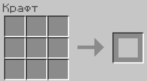
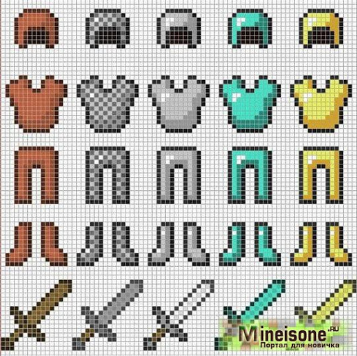
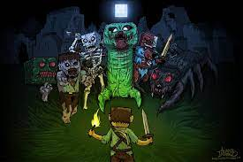
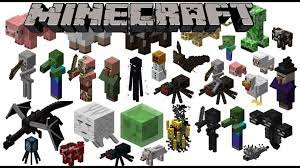

В игре Minecraft имеется возможность выбрать любой скин главного героя, однако стандартный скин известный как Стив имеет следующий внешний вид: Квадратный человек ростом в 31 пиксель, имеющий тёмно-коричневый цвет волос и голубые глаза.В качестве одежды Стив использует бирюзовую рубашку с короткими рукавами и синие штаны.

Строительство — одна из неотъемлемых деятельностей, присутствующая в Minecraft. Данная статья содержит сопровождённую примерами подробную информацию о разновидностях сооружений, которая может помочь игрокам на различных этапах игрового процесса.Необходимо учесть, что для правильного жилища требуется ограждение из блоков, включая дверь, для защиты от враждебных мобов и источник света. В дальнейшем можно разместить необходимые функциональные блоки: верстак, печь и сундук.Данная статья посвящена самым разнообразным постройкам, распространенным в этой игре!

Крафт— это способ получения большей части существующих в Minecraft блоков и предметов. Крафт был добавлен в версии Indev. Для того, чтобы скрафтить что-либо, игроку нужно определённым образом разместить в сетке крафта необходимые ресурсы. В инвентаре игрок может воспользоваться сеткой крафта 2х2. Для работы с сеткой 3х3 нужно создать и установить верстак. Панель крафта в инвентаре и верстаке выглядит следующим образом: с правой стороны расположена сетка крафта, ниже неё есть кнопка создания предмета. С левой стороны расположен список блоков и предметов.

Оружие-ето отдельний вид искуства. Виды оружий в Майнкрафте есть очень много такие как: лук, меч, арбалет, трезубец, топор. Да именно топор некоторые игроки используют его как и оружие и как топор. Броня-также есть разних видов например: кожаная, кожущеня, желелезная, золотая, алмазная и незеритовая

Враждебные мобы — опасные, агрессивные мобы такие как: Хоглин, Ифрит, Зомби-наездник, Крипер, Утопленник, Древний страж, Чешуйница Края, Вызыватель, Гаст, Страж, Хоглин, Кадавр, Лавовый куб, Фантом, Жестокий пиглин, Разбойник, Разоритель, Шалкер, Чешуйница, Скелет, Скелет-всадник, Слизень, Скелет-наездник, Зимогор, Досаждатель, Поборник, Ведьма, Скелет-иссушитель, Зоглин, Зомби, Зомби Житель.

Дружелюбные мобы — это мобы, которые не атакуют игрока в любом случае. Некоторых из них можно разводить или приручить мобы такие как: Треска, Летучая мышь, Кошка Курица, Треска, Корова, Осёл, Лиса, Лошадь, Грибная корова, Мул, Оцелот, Попугай, Маленький пиглин, Свинья, Кролик, Лосось, Овца, Черепаха, Лошадь-скелет, Снежный голем, Спрут, Страйдер, Тропическая рыба, Черепаха, Деревенский житель, Странствующий торговец,